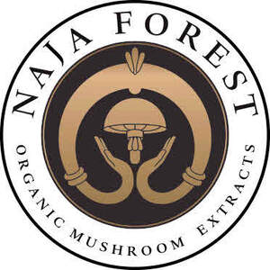

Trade Mark Journal No.2025/030 25 July 2025
UK00004234701 16 July 2025 (3,5,35)

- Class 3
- Baby oils; Baby lotions; Bath oils; Beauty care cosmetics; Skin care cosmetics; Beauty creams; Beauty gels; Beauty lotions; Body gels [cosmetics]; Beauty serums; Beauty soap; Beauty milk; Body oils; Body oils [for cosmetic use]; Cosmetic products for the shower; Cosmetics; Cosmetics and cosmetic preparations; Cosmetics in the form of oils; Distilled oils for beauty care; Essential oils; Ethereal essences and oils; Facial oils; Hair oils; Massage oils and lotions; Mineral oils [cosmetic]; Natural oils for cosmetic purposes; Non-medicated oils; Oils for the skin; Oils for toiletry purposes; Perfume oils; Perfumery products; Skin care products for animals; Skincare cosmetics; Soap products.
- Class 5
- Anti-oxidants for medicinal use; Decoctions of medicinal herb; Dietary and nutritional preparations; Dietary and nutritional supplements; Dietary food supplements; Dietary pet supplements in the form of pet treats; Dietary supplement drink mixes; Dietary supplement drinks; Dietary supplements; Dietary supplements consisting of vitamins; Dietary supplements for animals; Dietary supplements for human beings; Dietary supplements for humans not for medical purposes; Dietary supplements for infants; Dietary supplements for medical use; Dietary supplements for pets; Dietary supplements for pets in the nature of a powdered drink mix; Dietary supplements in powder form; Dietary supplements with a cosmetic effect; Dietetic foods for medicinal purposes; Extracts of medicinal herbs; Extracts of medicinal plants; Feed supplements for veterinary use; Fitness and endurance supplements; Food supplements; Food supplements for dietetic use; Food supplements for veterinary use; Food supplements for medical purposes; Food supplements in liquid form; Health food supplements made principally of minerals; Health food supplements made principally of vitamins; Herbal anti-itch ointments for pets; Herbal beverages for medicinal use; Herbal tea for medicinal use; Herbal compounds for medical use; Herbal preparations for medical use; Herbal medicine; Herbal sprays for medical use; Herbal supplements; Herbal teas for medicinal purposes; Herbs for medicinal purposes; Herbs (Medicinal -); Liquid dietary supplements; Liquid nutritional supplements; Liquid vitamin supplements; Liquid herbal supplements; Medicated supplements for foodstuffs for animals; Medicinal herb extracts; Medicinal herb infusions; Medicinal herbal extracts for medical purposes; Medicinal herbs; Medicinal herbs in dried or preserved form; Medicinal infusions; Medicinal oils; Medicinal ointments; Medicinal roots; Medicinal sprays; Medicinal tea; Mineral dietary supplements; Mineral dietary supplements for humans; Mineral nutritional supplements; Nutritional supplements; Nutritional supplement energy bars; Nutritional supplements consisting of fungal extracts; Nutritional supplements for veterinary use; Plant and herb extracts for medicinal use; Powdered fruit-flavored dietary supplement drink mix; Powdered nutritional supplement drink mix; Powdered nutritional supplement energy drink mix; Probiotic supplements; Protein dietary supplements; Protein powder dietary supplements; Protein supplement shakes; Protein supplements; Vitamin and mineral food supplements; Vitamin and mineral supplements; Mineral supplements for feeding livestock; Acai powder dietary supplements; Anti-oxidant supplements; Enzyme dietary supplements; Vitamin supplements for use in renal dialysis; Bee pollen for use as a dietary food supplement; Soy isoflavone dietary supplements; Nutritional supplement meal replacement bars for boosting energy; Natural dietary supplements for treating claustrophobia; Vitamin and mineral supplements for pets; Vitamin preparations in the nature of food supplements; Vitamin supplements; Vitamin supplements for animals; Vitamins and vitamin preparations; Vitamins for pets.
- Class 35
- Wholesale services in relation to dietary supplements; Retail services in relation to dietary supplements; Mail order retail services for cosmetics; Online retail services relating to cosmetics; Online retail store services relating to cosmetic and beauty products; Retail services for pharmaceutical, veterinary and sanitary preparations and medical supplies; Wholesale services for pharmaceutical, veterinary and sanitary preparations and medical supplies; Retail services in relation to beauty implements for animals; Retail services in relation to hair products; Retail services in relation to pet products; Wholesale services in relation to beauty implements for animals; Retail services in relation to foodstuffs.
Nikolett Szabó
Representative: Hajnalka Semsei